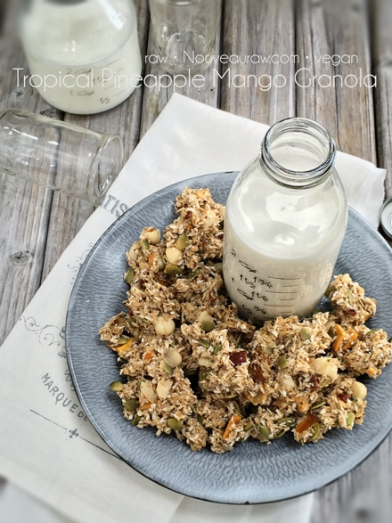

Tropical Pineapple Mango Granola

~ raw, vegan, gluten-free ~
I have been playing in the kitchen a lot lately, making all types of raw granola. They are so easy to design, and the possibilities are just endless. You get to be the driver of the bus as my husband likes to say. Meaning, you are the driver of your own “bus, ” and you have total control.
It’s up to you to select the ingredients to not only tailor to your taste buds but is also what will guide you towards optimal health. Tailoring your diet to your genetics and circumstances can help your body cope better with the demands you make on it. Be kind to yourself.
I have selected a handful of dried fruits that remind me of the tropics; coconut, mango, and pineapple. If you are not in the habit of drying your own fruits, be aware of what you are buying when purchasing pre-dried from the store. If I am in a pinch and have to buy pre-dried fruit, the first thing I do is flip the bag over and read the ingredients.
Many dried fruits are soaked in sugars and chemicals. If anything is listed other than the fruit itself, back on the shelf it goes.
If it does, in fact, list only the fruit, I continue scanning the package. I ask myself, “Is it organic? If not where does it fall on the list of pesticide use? How does it look? If I like the answers, I buy it, if not, it’s back to the drawing board (cutting board?). :) These are just some of the things to keep in mind. I hope you enjoy this recipe.
Yields roughly 16 cups dried granola
- 4 cups gluten-free rolled oats, soaked
- 1 cup raw chopped macadamia nuts, soaked
- 1/2 cup raw pumpkin seeds, soaked
- 3 1/2 oz (by weight) dried mango, soaked and diced
- 3/4 cup dried pineapple, soaked and diced
- 1/2 cup Medjool dates, soaked
- 3/4 cup dried coconut flakes
- 2 Tbsp cold-pressed coconut oil, melted
- 2 Tbsp chia seeds
- 1 tsp vanilla extract
- 1 tsp ground Ceylon cinnamon
- 1/4 tsp Himalayan pink salt
Preparation:
- After the oats are done soaking, drain, and rinse them under cool water for 2 minutes.
- Use your fingers to agitate them while rinsing.
- Hand squeeze the excess water from them and place them in a large bowl.
- After soaking the nuts and seeds, drain, discard the soak water and add to the bowl with the oats.
- If the dried fruit is really hard and tough, soak them in enough warm water to cover them for about 15 minutes.
- Place the chia seeds in 1 cup of water to soak during the same time frame as the dried fruits.
- Drain the soak water and add just the dates, soaked chia seeds, coconut oil, vanilla, cinnamon, and salt in the food processor, fitted with the “S” blade. Process until everything is well combined. Pour into the oat bowl.
- Add the mango, pineapple, and coconut flakes… all ingredients should now all be in the big bowl! Mix everything well.
- Drop clusters of batter on the non-stick sheets that come with the dehydrator.
- If you don’t own non-stick sheets, you can parchment paper but not wax paper. Food tends to stick to wax paper.
- Dehydrate at 145 degrees (F) for 1 hour, then reduce to 115 degrees (F) for 16 hours or until dry.
- Dry times will vary due to climate, humidity, and how full the machine is.
- Store in a glass airtight container. Place in fridge to extend the shelf life.
 The Institute of Culinary Ingredients™
The Institute of Culinary Ingredients™
- Dates are an amazing ingredient for raw food recipes, click (here) to read why.
- Why do I specify Ceylon cinnamon? Click (here) to learn why.
- What is Himalayan pink salt and does it really matter? Click (here) to read more about it.
- Are oats gluten-free? Yes, read more about that (here).
- Are oats raw? Yes, they can be found. Click (here) to learn more.
- Do I need to soak and dehydrate oats? Not required but recommended. Click (here) to see why.
Culinary Explanations:
- Why do I start the dehydrator at 145 degrees (F)? Click (here) to learn the reason behind this.
- When working with fresh ingredients it is important to taste test as you build a recipe. Learn why (here).
- Don’t own a dehydrator? Learn how to use your oven (here). I do however truly believe that it is a worthwhile investment. Click (here) to learn what I use.
© AmieSue.com